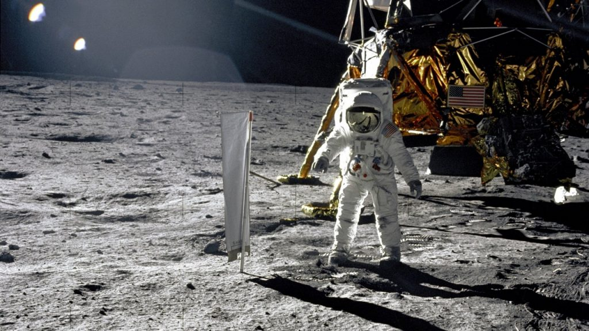

Földön kívüli élet az élet olyan formája, mely nem a Földön keletkezett.
Létezését jelenleg sem bizonyítani, sem egyértelműen kizárni nem lehet, bár az valószínű, hogy nem csak a Földön alakult ki élet, így a kérdés elsősorban arra vonatkozik, hogy az élet megjelenése milyen gyakori a világegyetemben. A közvetlen bizonyítékok hiánya ellenére a Földön kívüli élet hipotézise kutatható, egyrészt az élet fennmaradásához szükséges környezetek, másrészt az élethez szükséges, vagy az általa termelt (biogén) anyagok felfedezésével. A Földön kívüli élet kutatásával az asztrobiológia tudománya foglalkozik.
A Földön kívüli életről szóló elképzelések a földi kultúrában jelentős szerepet játszanak modern korunkban. Ez nemcsak a tudományos-fantasztikus irodalomban, hanem más területeken is így van.
Földönkívülinek nevezzük azokat az élőlényeket, amelyek a mi bolygónkon, a Földön kívül léteznek, vagy onnan származnak. Létezésük hipotetikus: jelenleg nincs döntő bizonyíték sem a földönkívüli élet létezéséről, sem cáfolatáról, ugyanakkor számos tudós legalábbis valószínűnek tartja létezésüket. Többen egyenesen kizártnak tartják, hogy ne lennének még valahol élőlények a világegyetemben. Összességében létezésük igazolása csak következtetéseken alapul. A földönkívüli lények megjelenését tekintve vannak humanoid-elképzelések, hatalmas, vagy egzotikus szörnyekről szóló elképzelések, és különféle, kevésbé hatásvadász elképzelések baktériumokról, vírusokról, illetve a földi életformától teljesen eltérő lehetőségekről. A földönkívüli lények leírásával foglalkozó tudomány az exobiológia (magyarul az élet lehetőségeinek és megjelenési formáinak tanulmányozása más égitesteken).
A Földön kívüli élet keresése a NAPRENDSZERBEN
Égitestek, melyeken az élet valószínűsége a legnagyobb, a valószínűség csökkenő sorrendjében. Ezekből három hold, melyeken nagy kiterjedésű felszín alatti folyadék megléte lehetséges, amelyekben kialakulhatott az élet:
Mars – folyékony víz létezett a múltban a Marson, és még mindig lehet nagy mennyiségű folyadék a felszín alatt. Metánt is találtak a Mars atmoszférájában.
A Jupiter Europa holdja - a vízjég kéreg alatt minden valószínűség szerint folyékony vízóceán található, melyet a Jupiter által keltett árapályerők tartanak folyékonyan.
A Szaturnusz Titan holdja – az egyetlen, atmoszférával rendelkező ismert hold. Érintette a Huygens szonda. Szénhidrogén-tavakkal (esetleg -óceánokkal) rendelkezik. Légkörében a Nap lágy röntgensugarainak hatására, amennyiben folyékony víz is megjelenik, nukleinsavak is keletkezhetnek.[1]
A Szaturnusz Enceladus holdjának felszíne alatt folyékony víz lehet.[2] A Cassini űrszonda az Enceladus kriovulkáni kitöréseiben vízjeget, metánt és egyszerű szerves molekulákat talált, ezeknek biológiai eredete esetleg kimutatható már ezzel az űrszondával is.[3]
Vénusz – napjainkban csak az atmoszférában képzelhető el,[4] nem a felszínen. A bolygó történetének elején, talán néhány százmillió évig, lehetett folyékony víz a felszínén, ami később elpárolgott.[5]
Ceresz - a törpebolygónak kőzetmagja és vízjégből álló kérge van, ellentétben a többi kisbolygóval, melyek a késői nagy bombázás során történt ütközések során elvesztették vízjégtartalmukat. Ha kialakult felszínén vagy mélyében az élet, onnan a Földre is juthatott szerves anyag vagy mikroorganizmus. A Cereszről származnak a HED meteoritok is.[6]
Számos más égitest is felmerült, beleértve a feltételezett légköri életet a gázóriásokon. Fred Hoyle feltételezése szerint mikrobiális élet létezhet az üstökösökön. Néhány földi mikroba képes volt évekig életben maradni egy holdszondán. Összetett többsejtes organizmusok léte ezen helyek bármelyikén nagyon valószínűtlen.
Közvetett keresés
A csillagászok kutatnak olyan Naprendszeren kívüli bolygók iránt is, amelyeken lehetséges az élet. Az esélyek nagyok, hisz tőlünk alig 50 fényév sugarú körben kb. 2000 csillag (1400 csillagrendszer) található.
Az Európai Déli Obszervatórium (ESO) csillagászai olyan exobolygót fedeztek fel a Gliese 581 csillag körül,[7] amely a korábban felfedezett exobolygóknál alkalmasabb az élet hordozására (0-40 °C felszíni hőmérséklet, a Föld tömegénél alig 50%-kal nagyobb tömeg, keringési pálya a lakható övezeten belül).
Az exobolygók légkörében vagy felszínén biogén (élőlények által termelt) anyagok kimutatása napjaink műszerei számára szinte megvalósíthatatlan feladatot jelentenek, emiatt olyan módszereken dolgoznak, amelyekkel a jelenleg elérhető műszerekkel is következtethetünk az exobolygók anyagi összetételére. Fedési exobolygók esetében a csillag előtt történő átvonuláskor a csillagfény egy része a bolygó légkörén halad át, így a csillag sokkal erősebb fényének spektrumát elemezve talán kimutatható a bolygó légkörének összetétele.[8]
Ha egy bolygó a saját tengelye körül forog, akkor a rajta lévő legnagyobb alakzatok (kontinensek, óceánok), ha egyenetlenül oszlanak el, a bolygó fényének (fényerő, színezet) periodikus változását okozzák, ebből következtetések vonhatók le a felszín összetételére. Próbaképpen a Deep Impact űrszonda az EPOXI kísérletsorozat keretében a távolról csak pontszerűen látszó Földet vizsgálta műszereivel. A kísérletet végző kutatóknak sikerült rekonstruálniuk néhány nagyobb felszíni alakzatot (például a Csendes-óceánt).
A Naprendszeren kívül számos helyen fedezhetőek fel szerves vegyületek. A fiatal csillagok körüli protoplanetáris korongokban a Spitzer űrtávcső segítségével acetilént és hidrogén-cianidot sikerült kimutatni, igaz, ez utóbbit csak az erősebb ultraibolya sugárzással rendelkező, Naphoz hasonló csillagok körül.[9] Rádiócsillagászati módszerekkel a Tejútrendszeren belüli Sagittarius B2 óriás molekulafelhőben sikerült bonyolult szerves molekulákat, többek között etil-formiátot (C2H5OCHO) és az n-propil cianidot (C3H7CN) kimutatni, a kutatások fő célja azonban aminosavak felfedezése a csillagközi gázfelhőkben.[10][11]
Az élőlényekben, nem tükörszimmetrikus szerves molekuláknak csak az egyik kiralitású változata található meg, amely az általa visszavert fény polarizációját befolyásolja, így elvben távolról is kimutatható.[12] A tervezett EELT óriástávcső már alkalmas lehet a polarizációs anomália kimutatására exobolygók esetében is.[13]
Elfogadott elmélet, hogy bármely technológiai társadalom sugároz magáról információt a környező űrbe. Az olyan projektek, mint a SETI, olyan rádiójelek után kutatnak, mely megerősítené az intelligens élet létezését.
A második videó a FERMI PARADOXONRÓL
Húzd a képre az egeret

Holdra szállások emberrel
John Fitzgerald Kennedy amerikai elnök 1961. május 25-én hirdette meg a Holdra szállási programot.[1] Az űrversenyben, amely a Szovjetunió és az Amerikai Egyesült Államok között alakult ki, az amerikai Apollo-program volt az első – és mindeddig egyetlen – ilyen űrkutatási program, melynek keretében 1969 és 1972 között az Egyesült Államok 12 űrhajóst juttatott a Hold felszínére.